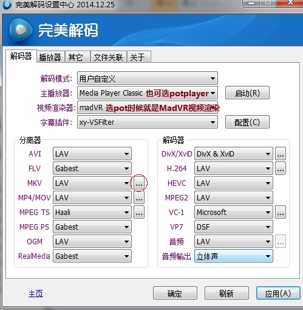
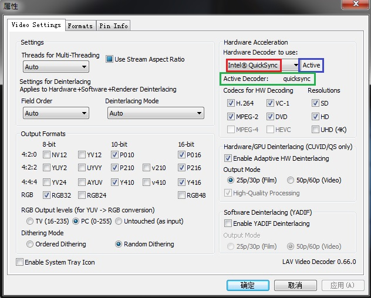
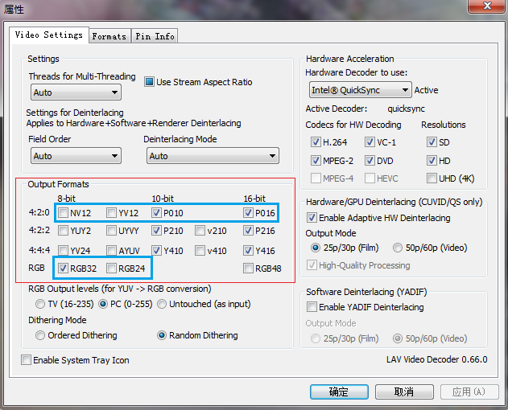
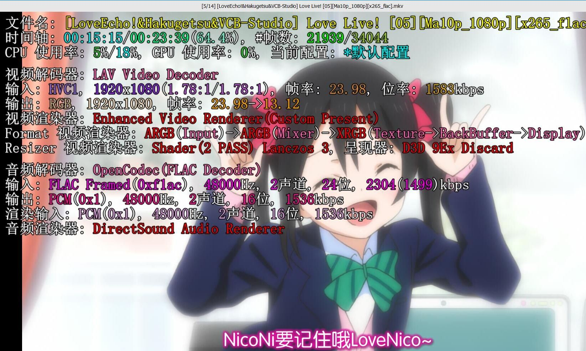
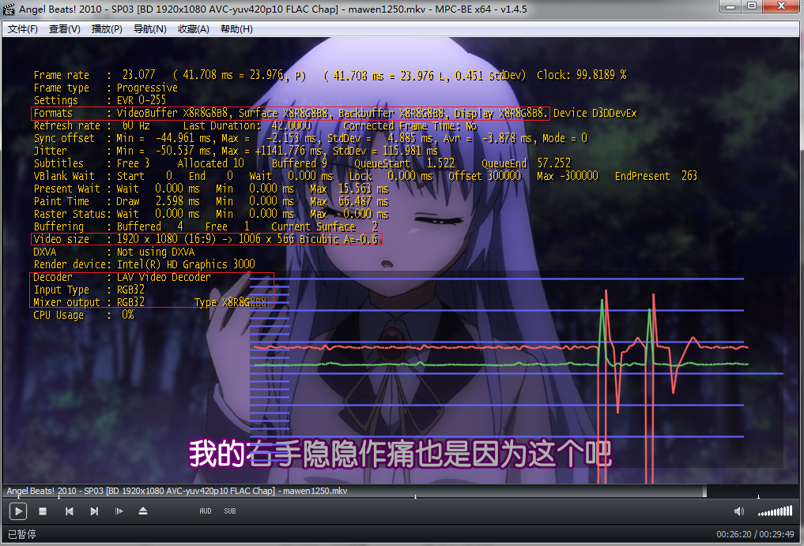
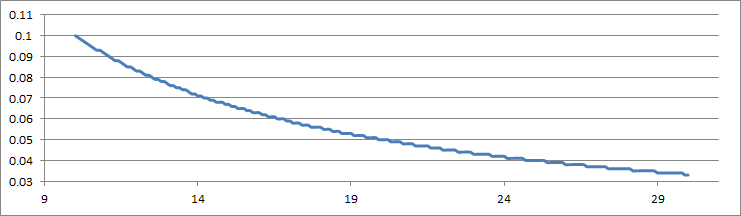
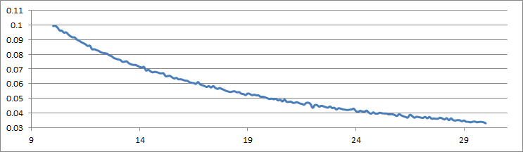
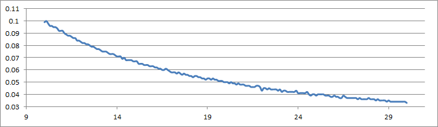

以下原文链接，非商业存个档学习
[VCB-Studio 科普教程 5] 那些播放器教程背后的知识
[VCB-Studio 科普教程 5] 那些播放器教程背后的知识
几乎一年前，我们写了一篇科普向的文章：http://vcb-s.com/archives/2726，意外地广受大家好评。很多读者在评论中表达了希望有后续科普的意愿，今天我们为大家带来这个系列的后续篇。
阅读本篇之前，请务必确保你基本理解了科普三（上文链接）的内容。如标题所示，本篇致力于讲述播放器相关的知识，而不是任何播放器安装教程。
这篇教程的目的是，为那些希望折腾一个更好播放器的观众，讲述一些平时你阅读的教程，不会跟你说的重要知识，来解答以下问题：
播放器播放视频，是怎样的一个流程？
硬解和软解的区别优劣在哪里？
什么样的播放效果是最标准、最原汁原味的？
为什么高级播放器教程全写的那么繁琐复杂，还特容易各种出错？
为什么动漫压制特别喜欢用10bit，而且播放器动不动推荐madVR？
不同精度在播放器中的标识是怎样？怎么判断播放过程是否对画质有折扣？
SVP/Reclock/XySubFilter是怎样插件？
我应该怎样选择合适我的播放环境？
本教程将分以下模块详细叙述：
播放器的工作流程：分离，解码，渲染
硬解的定义、分类
YUV->RGB转换过程中的细节
硬解的优劣与选择
图像格式的标识与查看方法
动漫画面区别于常规录制视频的特殊性
播放器软件的现状与分析
其他常见播放器配件简介
播放器配置学习的建议
1、播放器的工作流程：分离，解码，渲染
简单说就三个大步骤：分离、解码、渲染。
分离，指的是拿到媒体文件(MKV/MP4/MKA)等，先收集相关的文件（包括外挂音轨、字幕），然后将所有轨道拆开，拆分成单独的内容。视频流、音频流、字幕、章节信息，等等。负责执行分离的模块滤镜，叫做分离器(splitter/demuxer)。
当同样类型的轨道不止一条的时候（比如多音轨），分离器还负责挑选其中的一条。通常同类型多轨道，会有一条轨道被设定为“默认轨”（比如多音轨MKV一般以主音轨为默认），你想选择副音轨，你就需要在分离器中手动切换。很多播放器会在自己的界面中提供音轨/字幕切换的功能，其实也是间接利用分离器实现的。
分离器现在能用的基本上只有LAV/ffmpeg了（这俩几乎可以算一家），以前还有个Haali，然而停止更新已久，不能适应HEVC时代了。
分离器一般不耗费运算性能。因为它只是简单地收集、拆分和选择。
解码，指的是将分离器丢来的各种原生压缩格式，比如H264/H265的视频，FLAC/AAC的音频，解码为非压缩的格式，比如视频是YUV/RGB（相当于bmp），音频是PCM（相当于wav），然后丢给下游模块。负责解码的模块滤镜称为解码器(decoder)。常见的有LAV/ffmpeg, ffdshow(同样停止更新了)……
当解码器能完全解码一个轨道中所有有效信息的时候，我们成为完全解码（现在绝大多数情况是如此），否则称为不完全解码。比如说，早期一些显卡的硬解，不能完全处理H264视频流的所有，解码出的画质有折扣；又或者DTS-HD MA解码器开源之前，基于ffmpeg/lav等解码器只能解码出部分信息，导致音频是有损的。
解码出来的格式，都需要加上精度的度量。比如说10bit 视频完全解码后是YUV 10bit，8bit视频是YUV 8bit，16bit flac格式是PCM 16bit整数，aac是PCM 32bit浮点。麻烦在于，解码器下游的模块不见得能照单全收。比如说以前播放器就不支持10bit YUV丢给下游，解码器只好转为YUV 8bit（后来madVR之所以是一个极大的提升，就是因为madVR基本上全部通吃）。同理；很多声卡能支持24bit整数PCM已经是极限，所以32bit浮点的PCM需要转为24bit整数。
如果解码器可以将最原始的数据，或者更高精度（比如有时候为了方便，将10bit转为16bit）输出给下游，我们称为全精度输出；否则，解码器会试图降低精度输出，我们称为低精度输出。少数时候，我们会让解码器做一些转换（比如vcb-s新播放器教程中，让lav解码器做YUV->RGB的转换），我们称为转换输出。
解码器，特别是视频解码器，往往成为大量消耗运算资源的地方。这个问题在H264早期非常严重，那时候的主流CPU很难负担720p/1080p的高清解码，能耗巨大，移动平台尤其如此。所以才催生了各种硬件加速和硬件解码，并逐渐成为一个规范标准。
渲染，指的是将解码后的数据，在pc硬件上（显示器、扬声器）进行播放。负责渲染的模块我们称之为渲染器(Render)，视频渲染器主流有EVR（Enhanced Video Render, 微软送的）以及madVR(madshi Video Render)。
音频渲染器一般都是系统自带的（同样是微软送的），也有可以自定义的。比如MPC播放器有MPC Audio Render，可以支持类似wasapi输出等其他功能。
因为显示器是RGB显示，而解码后的视频多为YUV格式，渲染器一般也需要负责将YUV转换为RGB，并保证输出的图像大小跟播放窗口吻合。
多数播放器自带的滤镜（mpc/pot都有很多调色之类的功能），显卡的加成，以及SVP，都作用于解码器和渲染器中间。它们接过解码器解码的数据，对其进行处理，然后将处理后的数据送给渲染器。因为渲染器是需要借助显卡进行图形运算，YUV数据基本上需要先进入显存，所以显卡可以检测到丢来的YUV数据，对其进行“优化”。同样需要当心的是，这些滤镜和处理，往往入口精度低，处理精度也低。导致的后果就是解码器被迫低精度输出，给这些滤镜低精度处理，从而大幅降低视频精度，导致色带色块问题。
字幕的加载可能在渲染器前（将字幕信息整合进YUV/RGB数据给渲染器），也可能在渲染器后（播放器来将字幕整合入生成完毕的RGB图像）。
多数解码包的配置界面，主要就是让你选择分离器、解码器和渲染器的：

如上图，上方就有让你选择视频渲染器，然后下方左右分别是针对不同文件格式的分离器，以及针对不同媒体格式的解码器。
2. 硬解的定义与分类
如上文所说，硬解是为了缓解高分辨率新编码面世初期，CPU不堪重负的解码压力，而诞生的技术。如果说软解的定义是：利用CPU通用运算能力，进行解码，那么硬解的定义可以这么说：不利用CPU通用运算能力，而是依赖其他集成电路，无论是否特制，来进行解码。
更古老的时候，有些显卡没办法进行完全解码，只是帮助计算部分解码过程中的运算，那么可以归为“硬件加速”。估计Intel下一代CPU“混合加速HEVC解码”也是一样的道理。
硬解现在比较常见的是以下种类：
DXVA(DirectX Video Acceleration)，比较古老的方案了。Windows XP以及之前系统上流行的。上古ffdshow的硬解就是利用DXVA。DXVA规范下容易出现不完全解码，导致画质降低。Vista以后，渐渐地被抛弃。
DXVA2，目前主流的硬解方式。主要由GPU来实现，但是并非利用GPU的流处理器，INA三家都是使用了单独附在GPU芯片上的一块专职电路来完成。GPU硬解能力往往不与显卡游戏性能相关，而与搭载的专职电路先进与否相关。典型的就是GT610，它是NVIDIA第一款能硬解4K视频的GPU，同时代其他GTX650/GTX580什么面对4K视频只有傻眼的份儿，就因为它的GPU塞入的专职电路，是刚开发出最先进的一款（代号为VP5，其他同时代的都是VP4）。
使用DXVA解码，都需要先将视频数据（压缩的格式）传输到显存中，然后再让GPU进行解码。
DXVA2有两种实现方式：native和copy-back。区别是解码后的数据是否还要传回内存。
native选择不传，直接丢给同样依赖GPU工作的渲染器，数据从头到尾都在显存中。而copy-back选择传，数据会传回内存，一番处理后再传回显存，让渲染器工作。native的输出必须为YUV 8bit，而copy-back则可以为10bit。
之所以需要有copy-back这么个传来传去的过程，就是因为有些滤镜，比如SVP，比如LAV的转格式，必须依赖CPU+内存进行工作。不传回来没办法继续处理。copy-back保证了硬解的流程类似软解，可以不漏下任何后处理。而代价是传来传去必定降低性能，增加能耗。需要注意的是，即便用native，也可能导致解码后的数据被“优化”，因为有些处理，包括播放器、显卡驱动带的那些，是可以完全作用在GPU环境中的。
除了DXVA2，还有两种特殊的硬解：Intel Quick Sync, 和NVIDIA CUVID。如同名称所示，它们是Intel和NV的专属。
Intel Quick Sync是集成在CPU中的逻辑电路承担的。注意的是这玩意并非隶属于Intel的集显，而是CPU的直属。它直接读写内存，运行表现和软解非常类似。Intel Quick Sync堪称速度快，能耗低。
NVIDIA CUVID，是基于NV自己的接口，写的一个类似DXVA2(copy-back)的升级版。
硬解的模式可以在LAV Decoder的设置中选择：

红框的下拉框可选None(软解)，CUVID，QuickSync，DXVA2(native 和 copy back)。
每选择一个模式（除了None），蓝框会显示一个单词：
Active：当前正在使用这种模式解码
Available：应该可以使用这种模式
Not Available：不支持使用这种模式
绿框当中则是显示当前在使用哪个解码器。如果是软解，显示avcodec，否则显示类似dxva2cb, dxva2n等标示。
碰到没办法开启硬解，比如设备不能正常工作，或者碰到10bit AVC这种不支持的，那么自动转为软解。
3、YUV->RGB转换过程中的细节
将解码器输出的YUV格式，转为RGB，并且缩放到播放窗口输出，是视频渲染器的职能。可以说，如果解码过程是完全解码，也不主动添加播放器调校和驱动增强，渲染的环节决定了最终成品的画质。造成画质区别的可以说就三点：缩放算法，运算精度，和抖动算法。任何试图优化渲染器效果的尝试，都应该从这三个方面着手。
缩放算法造成的区别，比较好理解。例如原图(150150)：
用双线性算法（上，多数播放器默认算法）和nnedi3(下)放大到272 272像素：
不同算法造成的效果肉眼可见。注意上图中随处可见的锯齿，以及细线的模糊。
精度，是指运算的过程中，参与运算的数，有效位数的高低。在计算机中表现为使用怎样的格式来进行，8bit/16bit/32bit整数，16bit/32bit浮点。精度不足的表现在上篇教程中已经有展示，不做赘述，然而还是提醒一句：千万不要以为显示器是8bit，就认为8bit 整数 的片源精度/处理精度是足够的。
另外，RGB处理相对YUV处理，精度要求相对较低；或者说，RGB处理相比较，精度稍低带来的影响不明显。（不幸的是多数时候处理的数据都是YUV，然后根据水桶原理……）播放过程中，应该尽量减少RGB-YUV互转的次数，每一次转换都要做一次计算与取整，都会导致实际精度降低。
抖动算法(Dithering Algorithm)，通常出现在高精度转低精度中。在数字图像高转低处理中，全部四舍五入不见得是好习惯。抖动算法通过科学的添加噪点，来掩盖精度的不足。比如说原图（RGB24，即RGB 8bit）：
分别用四舍五入（上） 和 Floyd–Steinberg 抖动算法（下），将此图转为RGB16(RGB分别为5bit，6bit和5bit，早期windows桌面的“16色”，区别于RGB24的“真彩色”)
可以看出，使用抖动算法的图片较好的掩盖了精度不足引起的色带和偏色问题。在YUV 和 RGB的运算过程中，如果出现高精度转低精度，是否使用抖动，使用的抖动算法如何，也会决定输出效果。
现在，我们来模拟一下渲染器的工作流程，并用蓝色标注出可能造成画质差别的地方：
1、渲染器从解码器那里获取YUV数据。注意拿到的数据可能是全精度，也可能是降精度，取决于渲染器接口类型；
2、播放器和显卡驱动可能会试图“优化”画面；
3、如果不是YUV444格式的，渲染器会先将UV平面放大到Y平面的大小。这个步骤称为Chroma upscaling；
4、将YUV444的数据，转为RGB。转换的过程势必需要浮点运算（YUV->RGB一些参与运算的常数是浮点数）；
5、播放器或者渲染器将RGB用特定的算法缩放到播放窗口大小。这个步骤称为Image Upscaling(图像放大)/Downscaling(图像缩小)；
6、因为4的步骤中，必须以浮点数运算，而输出结果一定是RGB 8bit整数，因此输出之前必须有一个高转低的过程。
2~6每一步都涉及数字运算，因此有运算精度的区别。
问：什么样的渲染器，什么样的输出画面是标准的、完美的？
答：没有。因为运算精度总可以无限的高，缩放算法也永远有提升的空间，所以视频播放不存在“标准、完美”一说；只有相比较而言的好与差，以及在人眼识别程度内的“接近完美”
问：有哪些渲染器能“接近完美”的处理以上所有情况？
答：只有madVR。
问：Windows充话费送的那个EVR，默认情况下有啥不好？
答：1、接口精度低，强迫YUV 8bit/RGB 8bit的输入；2、缩放算法默认是平庸的双线性；3、运算精度较低，默认只有8bit整数和16bit浮点数；4、抖动算法有，较为单一和固定；5、如果输入的是YUV数据，EVR会任由播放器和驱动乱来。
问：我们能怎么拯救EVR？
答：1、因为RGB对精度要求不敏感，而且输入RGB后，驱动和播放器基本没办法插手，所以设法永远输入RGB 8bit，不让YUV数据经过低精度处理；2、让LAV解码器来做YUV->RGB。LAV可以以32bit浮点的高精度、双立方的UV放大算法、随机抖动算法，较高质量的完成转换；3、图像缩放算法手动设置为更高级的双立方。
问：听上去不错，我们应该怎么操作？
答：参见http://vcb-s.com/archives/4384或者http://vcb-s.com/archives/4407
所以，如果你使用的是madVR渲染器，你应该允许LAV输出它默认设置的那些格式，YUV/RGB。LAV会以全精度输出YUV给madVR进行处理；如果你使用EVR渲染器，你应该永远只允许LAV输出RGB 8bit。
RGB 8bit 包括RGB24和RGB32。RGB32多一个透明层通道，看似带了个没用的东西，但是因为计算机更喜欢2的次方，所以部分运算下RGB32比RGB24快。在视频播放中，这两个格式几乎完全等同；互转也人畜无害（加一个空的透明度通道 vs 去掉透明度通道）。
之前基于EVR CP教程中，之所以pot推荐RGB24输出，而mpc推荐RGB32输出，是测试的结果。这样设置播放器不会再多一次转换（虽然就算转换了也没啥）
4、硬解的优劣与选择
绝大多数vcb-s的教程，都让大家不要开启硬解，就算开启，优先使用DXVA2(copy-back)，这里我们做一个详细的解释。
首先考虑一个问题：什么样的视频能被硬解？
8bit AVC可以被各种显卡硬解；然而8bit AVC格式的软解压力小的可怜，以vcb-s常发的24fps 1080p的视频算，现在CPU软解，占用率普遍不到5%。
10bit AVC没有能硬解的。（所以10bit版炮姐时代，试图硬解的洗洗睡吧。）软解，解码压力尚可，不是很可怕，24fps 1080p的视频，现在的cpu大约10%
8bit HEVC现在最新显卡普遍能硬解；然而因为8bit x265的缺陷（或者说8bit x264的优越性），我们发现这玩意表现多数还不及8bit AVC，所以vcb-s从来不用；相对而言，它的解码压力也不大，大致相当于10bit AVC。
10bit HEVC，目前只有NV的GTX950和GTX960支持硬解。它的软解压力算是比较大，现在主流的CPU占用在20%左右；对于上古CPU或者一些低端笔记本CPU，流畅解码会比较吃力，特别是60fps的特典。对于将来的4K 60fps，现在桌面4核心CPU基本上完全无力软解。
能硬解的视频必须是YUV420格式。
分析完毕了，你觉得自己需要硬解么？
如果你没有GTX960/GTX950，你也基本碰不到1080p 60fps乃至4K的8bit HEVC，那么你只能去硬解8bit AVC，省那么5%不到的CPU占用率——真有这个必要么？软解吃力的硬解解不了，硬解解得了的软解解的飞起，那我们为什么要冒着各种潜在风险去开硬解呢？
好吧，就算你说我真有理由要开硬解：我有GTX960/950，我的CPU真的太烂……我们来分析下不同情况下，硬解应该怎么开。硬解设置跟你使用的渲染器有关：
如果你使用madVR，通常是不建议你开硬解的。众所周知madVR会消耗大量显卡运算，因此没必要再去把大量数据塞进GPU和显存，跟madVR抢夺资源。让CPU分担解码，让GPU专心跑madVR，是比较推荐的做法；
如果你使用GTX960/950硬解10bit HEVC，请务必设置为DXVA2(copy-back)，这是现在唯一可以开启10bit HEVC硬解的模式；
其他情况下，如果你真的非要开硬解搭配madVR，建议顺序（保证你硬件可用）： Intel QS, DXVA2(native), NV CUVID, DXVA2(copy-back)，其实用哪个都没有太多关系，主要的功耗消耗点在madVR。
如果你使用EVR CP（调节过缩放算法），希望追求较高质量的播放，你首先要排除的是DXVA2(Native)。因为这种模式下，LAV会直接输出YUV 8bit给显卡，哪怕强制规定了输出只能是RGB。用DXVA2(copy-back)是可以的；这种模式下，解码后的数据将回传给CPU，继续做高质量转RGB的后续操作。
如果你使用GTX960/950硬解10bit HEVC，请务必设置为DXVA2(copy-back)，理由同上，并且也需要强制RGB输出。
其他情况下，建议顺序： Intel QS, NV CUVID, DXVA2(copy-back)
所以不难理解为什么之前教程我说了，要开硬解请用DXVA2(copy-back)。这种软解流程、硬解运算的泛用性模式，是最人畜无害的，哪怕这种模式折腾程度，导致在性能和功耗上大多是得不偿失。
追求最大性能的，特别是用来对付那些能够被硬解的高清病毒的，请使用EVR默认，搭配DXVA2(Native)播放。这样效率应该是最高的，各种专治8bit AVC 4K的高清病毒。只不过这种做法会损失画质，因此不建议日常使用。
5、图像格式的标识与查看方法
在播放器中，不同格式、不同精度的图像，有着规范的定义和标号。这一点可以在LAV的设置界面很清楚的看到：

其中蓝色部分标示的这些是最常见到的，主要是YUV 420的不同精度，以及RGB格式（注意16bit RGB，即RGB48，在现有播放器体系下还没有实装，所以现在播放器中的RGB基本就是RGB 8bit）
使用DXVA2(Native)硬解的时候，输出是DXVA，也是YUV420 8bit。
RGB格式除了上文所说的RGB32和RGB24，播放器中还有XRGB和ARGB的标示，也都是一回事儿。
Potplayer中观察方法，可以用tab键显示：

potplayer会给出视频解码器（图中是LAV）
解码器输入的格式是HVC1(HEVC)，输出是RGB给渲染器。YUV->RGB的过程完全是LAV处理。
渲染器是EVR CP，渲染整个过程，格式都是RGB，没有转回YUV。需要注意的是你必须关闭pot自带的内置滤镜（按F5，进入”参数选项”设置。 2、点击“滤镜”，将右边的”内置图像处理滤镜设置”激活条件设置为：”不使用”），否则potplayer一定会自作主张转回YUV的。
缩放算法是Lanczos 3。(注意如果你播放画面跟视频画面相同，比如你在1080p的显示器上全屏播放，缩放算法会显示临近采样，这是正常的)
MPC-HC/MPC-BE中，按Ctrl+J可以调出类似的信息：(再按1~2次取消)

红框中勾选的，Formats表示渲染过程中格式变化，从始至终都是RGB；
Video Size给出了原始尺寸和播放尺寸，以及使用的缩放算法(双立方 A=-0.6)
Decoder则是解码器；输出是RGB。
通过这样的查看方法，你可以知道你的播放器工作流程，以及设置是否按照预期。
6、动漫画面区别于常规录制视频的特殊性
一直以来都有这样的说法：“10bit, madVR这些东西都是那些压动漫的人弄出来的歪门邪道，我是看不出这些东西在电影上有个P用。”
其实吧，这还真不是这群人眼力不好或者装睡不醒。区别于录制视频，比如电影之类的，动漫、CG等有着自己的特殊性。总结起来就两点：1、噪点少，2、线条非常突兀。
视频拍摄，限制于器材水准，噪点是不可避免的，在后续制作等过程中也难以完全去除。而动漫天生可以0噪点，动漫中的噪点更多是数字图像处理中主动加上去的。噪点的一大作用就是极大地降低视频处理和压制，对于精度的需要。说的简单点：高噪点的视频不怕低精度，反之亦然。
怎么理解这个概念呢？我们借助一个简化的图片来演示。假设我们有一条平滑、高精度的曲线(这是y=1/x在[10,30]上的图)：
现在，我们把所有函数值，四舍五入到小数点后三位数：

降低精度的效果很明显，我们现在的图看上去跟楼梯一样，出现了明显的”断层”。表现在视频中，这种断层就是色带。同时值得注意的是，越是平坦、变化小的地方（就是之前科普中的”平面”），色带表现越严重。
现在，我们模仿给图像加噪点，来给这个函数加一个小幅度(约为1%)随机抖动：

然后我们也把它的精度限制为小数点后3位：

可见，这一次精度降低，图像似乎没有受到太多影响，精度降低造成的阶梯状效果也很不明显。表现在数字图像处理中，意味着噪点重的图片，在降低精度的时候收到的影响很小。
这就是为什么那些致力于改善精度的提升，对于电影等视频几乎没有用——播放过程的精度低怎么了；能有什么视觉影响？
类似的现象，噪点会使得人眼对图像锐利度等差异不敏感，或者说，缩放算法造成的区别，变得不太可见。以之前的图为例，假如为两幅图都加上强度相同的噪点：
区别已然几乎不可见。注意噪点是如何帮忙掩盖拉升过程中的锯齿等瑕疵，并加入虚假的高频信息，让图像看上去细节很丰富。这还是应用在线条/平面非常分明的动漫；换作电影，这样的差异只会更不起眼。
小结一下，当有噪点存在的时候，主打高精度、优秀缩放算法的播放器，优势将不再明显。从另一个方面讲，面对较少噪点、较为突出线条的动漫，对播放器的精度和缩放算法提出的要求就很高。编码器也是一样的道理，动漫非常需要10bit x264/x265这样原生高精度的编码器来提升画质。
因此，再面对本节开头的说法，不需要反驳，那是很自然的（摊手）。
问：既然加噪点可以有效避免精度降低，为什么在动漫压制中不用这个方法呢？
答：噪点作为一种高频信息，需要浪费成倍的码率。在今天10bit编码可以不增加（甚至减少）码率完美解决问题的前提下，我们为什么要用10年前的理解呢？
PS: 10年前只有8bit编码器的时候，主动加噪确实是很常见的防色带、去色带手段。在今天商业性蓝光编码器只有8bit精度的限制下，很多动漫蓝光后期也是通过加噪点解决的（Sony那高大上的“SBMV技术”的核心）。然而，蓝光可以不惜码率，Rip不行，除非你是Yousei。（所以Yousei的Devil-Jin至今用着这种手段）
7、播放器软件的现状与分析
接上文分析。面对占绝对多数的电影观众，现有的播放器，pot/mpc默认，已然足够好了。再好的设置能带来的观感提升几乎没有，还不如在什么一键增强，左眼效果，以及在线字幕、弹幕上下功夫。
面对多数动漫党，稍微修改一下基于EVR CP+LAV的播放设置，也能达到很满意的效果，很平衡的兼顾画质、性能与稳定性。所以如果你不求折腾（还把这么长的教程看到这里，真是辛苦你了），建议使用vcb-s最新写的两篇64bit播放器教程。
如果你真的欲求不满，那么你就可以试着接触madVR，SVP这些东西。但是有一点需要提醒的是：这些纯粹由fans开发的东西，甚至包括mpc/pot这些软件，是高度不可靠的。哪怕所谓的“稳定版”，出bug的几率都很高。（更别提现在madVR一直都是“测试版”，版本号还在0.x）MadVR至今有个问题，就是它所在的目录路径不能有中文。这个问题存在几年了，作者压根不屑于，或者说，抽不出精力去修复它——你见过几个正儿八经的软件不支持安装目录有中文？！
更恐怖的是，高质量播放依赖的组件数量庞大，而彼此之间缺乏系统性的联系测试。开发者往往是各自测试各自的，没有组织、没有公司说作为一个整体来调试一套方案。当播放软件趋于复杂，组件数量增多，功能强化，出错的概率指数级上升。一个基于potplayer+madVR的播放方案，不考虑音频，涉及到以下可能出问题的地方：
potplayer本体, LAV分离器，LAV视频解码器，madVR渲染器，操作系统，显卡和显卡驱动。
假设每一个组件出错的平均概率是3%，求问这一套方案正常运行不出错的概率是多少？1-0.97^6=83%。
也就是说，平均5个人里面，就有一个人用这套方案出错。出错的理由往往很难查到，每个人都有每个人的原因。
（举个我自己的例子，虽然我写的教程基于mpc-hc，但我自己在用mpc-be。因为对于mpc-hc，我设置让EVR渲染器使用双立方缩放，mpc-hc始终都使用的是最朴素的双线性，导致缩放效果很差（对我来说）。各种途径查错无功而返，最终换mpc-be问题解决。）
所以以后请别问我为什么不写madVR+SVP+Reclock+XySubFilter这些高端货的教程，更别出了错问我错在哪里、怎么解决——臣妾做不到啊！
8、其他常见播放器配件简介
除了madVR，其他播放器折腾一般还有这些配件：
SVP(Smooth Video Project)比较众所周知了，它是一个插值平滑软件。本身依赖avisynth开发，通过ffdshow/ffdraw来加载，作用在解码器之后，渲染器之前。SVP只能支持YUV420 8bit输入输出。
SVP的性能消耗非常可观，特别是开启OpenCL之后，如果再开启madVR（接EVR CP容易导致精度问题，这时候可以手动在ffdshow/ffdraw中加噪点来缓解），对显卡的性能和驱动稳定性都是考验。尽管如此，SVP的插值平滑带来的观看提升也是非常可观的，强烈建议madVR的倍帧满足不了、同时又有很强配置的观众们爬文安装。
XySubFilter，是目前最先进的字幕插件，对高级字幕特效的支持，渲染的质量，性能的优化，对高精度播放以及madVR的配合都做得很到位。如果你患有字幕强迫症末期，建议去折腾一下这个插件。
Reclock，一个致力于改善播放视频帧率不稳定的插件，不过多数人用它的目的可能还是为了它的wasapi输出。实际表现完全聊胜于无，特别是wasapi现在mpc自带的audio render就内置了，而且Reclock没有64bit版，因此不建议折腾。
9、播放器配置学习的建议
对于想自学高级播放器设置的同学们，教程总是不缺的，网上一搜一大堆，各大论坛什么的置顶帖，万年冷冻库，等等。写的比vcb-s现有几篇教程更新、更详细、更高端的比比皆是，也都可以作为很不错的教程。然而我一直认为，这些教程只是授人以鲤，或者授人以鳊、鲢、鳙……，导致的结果就是来一只鲫，或者给你个渔网让你按照自己喜好捞一只，很多人一下子就傻眼了。
这也是我写这篇教程的初衷，讲述一下现在网上林林总总的教程，不会跟你说的很多细节与知识。有的人madVR设置玩出了花，结果不知道检查pot内置的ffmpeg解码器，会把YUV420 10bit 降低精度+瞎转换 为YUV422 8bit丢给madVR，然后又说自己看不出区别……这折腾的意义何在呢。
学习播放器配置，有这么几条原则，是我希望分享给大家的：
1、实事求是。不要盲目的去折腾，也不要为了心理安慰去折腾。一套更好的方案，只有你确实感觉到了提升，并且这个提升在你心理满意度上，足够抵消麻烦，才值得你去升级。比较的过程中，相信自己的眼睛，而不是相信别人的说教。比如说我真不推荐笔记本用户折腾任何顶级缩放算法——那么小个屏幕你能看出点啥？教程里说出花的放大算法跟你有几毛钱关系？
2、循序渐进。先把一套简单基础的方案弄好弄懂，再去学习和尝试更好的方法。对于新的插件，你要尝试测试它们在你机器上的表现；对于别人的设置，设法了解他这么推荐的原因，以及这个原因是否适用于你。最典型的，很多人用着madVR问我，你在新教程里教我们LAV只勾选RGB，我要改么？看了这篇教程你应该知道要不要改与背后的原因了吧。
3、量力而行。播放器越高级，组件越多，往往性能消耗越大，出错概率也越高，同时收益越少。学会放弃与妥协，毕竟，你看的是片子，不是播放器组件和参数。